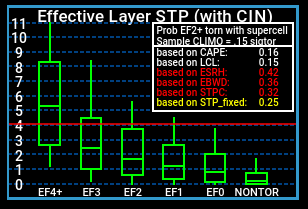
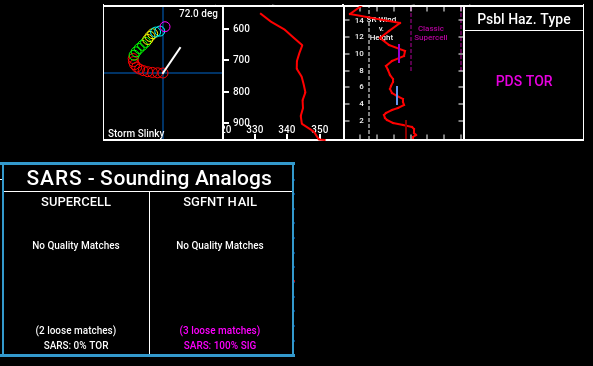

How to read a meteorlogical sounding.
You can click on the various buttons above to navigate around and learn more about each section.

Starting off with the basics, warm air rises and cold air sinks. So, with that understood, imagine a hot air balloon.


- PCL is Parcel. Refer to the Skew-T section for what a Parcel is.
- CAPE, was also explained in the Skew-T section.
- CINH is Convective INHibition. Not quite negative CAPE, but is close. It represents a layer of warm air.
- LCL is Lifted Codensation Level. This is measrured above sea level in metres. This is the lowest that the base of a storm (and possibly tornadoes) can start to form.
- LI is Lifted Index. If memory serves, it represents the overall change in temperature throughout the atmosphere. The lower it is the more meteorogically unstable the atmosphere tends to be.
- LFC is the Level of Free Convection. Going back to the hot air balloon, this is when the air in the balloon (parcel) becomes warmer then the surrounding environment and it begins to rise on its own. This is the bottom of the CAPE-containing layer.
- EL is Equilibrium Level. This is when the air inside our balloon equals the temperature of the surrounding environment and it stops rising on its own. This is the top of the CAPE-containing layer.
- SFC, once again is Surface.
- ML, is Mid-Level. What height this correlates to, I am not quite sure.
- FCST is Forecast. I think it means exactly this. What it is forecast to be at the given time of the model sounding.
- MU is Most Unstable. I.E., the most unstable part of the atmosphere.
Here's the image again to save you some scrolling back and forth. We have covered the top third above. Below is the middle third of it.
- PW is Precipitable Water. A measure of just how much water is in the atmosphere, if it all fell as rain. This is measured in inches.


STP (Significant Tornado Parameter)
This is laid out like a vertical box and whisker plot.
This is a "composite" (or combination) of multiple values. Generally, the higher it is, the more possibility there is for significant (EF2+) tornadoes. This number is meant to highlight the co-existence of ingredients supercells capable of producing EF2+ tornadoes. Extremley high values do not indicate there will 100% be an EF5 monster wedge. This value simply indicates that conditions are favourable for the development of strong to violent tornadoes.
This is laid out like a vertical box and whisker plot.
This is a "composite" (or combination) of multiple values. Generally, the higher it is, the more possibility there is for significant (EF2+) tornadoes. This number is meant to highlight the co-existence of ingredients supercells capable of producing EF2+ tornadoes. Extremley high values do not indicate there will 100% be an EF5 monster wedge. This value simply indicates that conditions are favourable for the development of strong to violent tornadoes.

Here, we have a few things. From left to right.
- SARS, or Sounding Analogue Retrieival System compares past (observed) soundings to the current ones and gives its best estimate of what might happen based off of prior storm reports, parameters and current conditions.
- "Storm slinky" - This shows the direction of the wind changing with height. A more readable version of the Skew-T's wind barbs. This is a feature on model soundigns only I have noticed. This does not exist on observed soundings.
- Theta-E Index. [Not in my notes, will ask an analyst.]
- SR (Storm Relative) wind with height - Also no idea.
- Possibe hazard type - This is SHARPY's little thing. Ignore it most of the time. It's fairly useless.